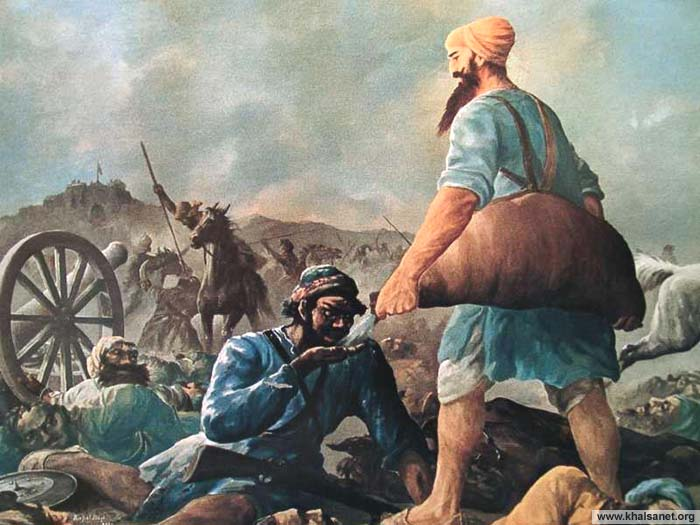

| ਭਾਈ ਘਨਈਆ ਜੀ ਪਿੰਡ ਸੋਦਰਾ ਨੇੜੇ ਵਜੀਰਾਬਾਦ ਜਿਲ੍ਹਾ ਸਿਆਲੋਕਟ (ਪਾਕਿਸਤਾਨ) ਵਿਖੇ ਸੰਨ 1648 ਈ: ਵਿਚ ਹੋਇਆ। ਉਹਨਾਂ ਦੇ ਪਿਤਾ ਜੀ ਇਕ ਅਮੀਰ ਵਪਾਰੀ ਸਨ। ਭਾਈ ਘਨਈਆ ਜੀ ਬਚਪਨ ਤੋਂ ਹੀ ਲੋਕਾਂ ਦੀ ਸੇਵਾ ਕਰਿਆ ਕਰਦੇ ਸਨ। ਆਪਣੇ ਕੋਲ ਜੋ ਵੀ ਹੁੰਦਾ ਤਾਂ ਉਹ ਲੋੜਵੰਦ ਨੂੰ ਦੇ ਦਿੰਦੇ।ਆਪ ਪਹਿਲੀ ਵਾਰੀ ਗੁਰੂ ਤੇਗ ਬਹਾਦਰ ਜੀ ਦੇ ਦਰਸ਼ਨਾਂ ਲਈ ਅਨੰਦਪੁਰ ਆਏ। |  |